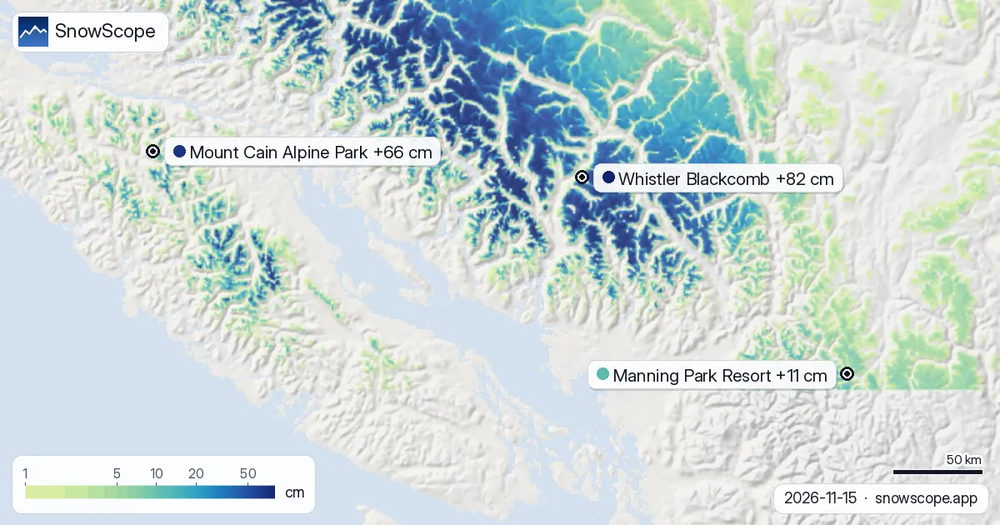

Manning Park Resort: 11 cm of fresh snow in 72 hours (Western Canada, 15 November)
Fresh snow at Whistler Blackcomb: 82 cm in the last 72 hours, including 49 cm in the last 24. Model depth on the upper slopes: about 138 cm. Fresh-snow amounts are among the hardest numbers to get exactly right; the ranking is more reliable than each value.
See the live snow forecast for Manning Park Resort in the SnowScope appSnow depth, powder alerts and the 3D map, free.
The fresh-snow numbers
Runners-up over the last 72 hours: Mount Cain Alpine Park and Manning Park Resort, with 66 cm and 11 cm.
The snow map in Western Canada shows 253,880 km² of white ground today and snow at 41 of 57 resorts.
| Resort | Snow depth | New snow, 72 h | Coming, next days | Top |
|---|---|---|---|---|
| Whistler Blackcomb | 138 cm | 82 cm | 13 cm | 2,259 m |
| Mount Cain Alpine Park | 97 cm | 66 cm | 9 cm | 1,616 m |
| Manning Park Resort | 31 cm | 11 cm | 2 cm | 1,789 m |
Ground truth
How sure are we? Resort values are model estimates for the upper slopes; stations are measurements, each at one point on the date shown.
Coming up
Until 18 November the forecast gives 13 cm at Whistler Blackcomb, 66 cm at Mount Cain Alpine Park and 2 cm at Manning Park Resort, with less certainty the further out you go.
Forecasts a few days ahead can change: look at the map again the day before you travel.
By height and slope
Three heights at Whistler Blackcomb, three numbers: 103 cm at the top (2,259 m), 48 cm at mid-mountain (1,456 m), 0 cm at the base (653 m).
The freezing level at Whistler Blackcomb reaches 1,040 m to 1,580 m on 15 November, cutting the resort in two: wet snow below, wintry above.
Safety and avalanche level
After fresh snow, wind builds drifts on sheltered slopes. Off-piste, the first days after a snowfall need the most care.
Tips for skiers
- The best powder lasts a morning, not a week. Go early, before the sun and the crowds get to it.
- A rule of thumb that is rarely wrong: high and north-facing keeps snow, south-facing loses it first.
- Before you ski off-piste or go touring, read the official avalanche bulletin (links below).
- Snow on the map does not mean a resort is open: check lifts and opening dates on the resort's website.
- Get a powder alert in the SnowScope app to know when Whistler Blackcomb gets fresh snow.
About these numbers
Resort snow depths are the deepest snow on the resort's upper slopes from the SnowScope snow model (about 1 km, run of 15 November); they are estimates for an area, not a measurement at one point. Station values are measurements on the date shown. Forecasts can change. Always read the official avalanche bulletin before going off-piste.
Official avalanche bulletins: Avalanche Canada
Cite this report
For research, teaching or the press: the numbers and charts are free to reuse under CC BY 4.0 with this citation.
SnowScope (2026), Manning Park Resort: 11 cm of fresh snow in 72 hours (Western Canada, 15 November), https://snowscope.app/blog/en/2026/11/western-canada-manning-park-resort-fresh-snow-powder-alert-15-november-2026.html, accessed 2026-11-15
SnowScope (Atlas Labs). (2026, November 15). Manning Park Resort: 11 cm of fresh snow in 72 hours (Western Canada, 15 November). SnowScope snow reports. https://snowscope.app/blog/en/2026/11/western-canada-manning-park-resort-fresh-snow-powder-alert-15-november-2026.html
BibTeX
@misc{snowscope2026westerncanadamanningpark,
author = {{SnowScope (Atlas Labs)}},
title = {Manning Park Resort: 11 cm of fresh snow in 72 hours (Western Canada, 15 November)},
year = {2026},
month = nov,
howpublished = {\url{https://snowscope.app/blog/en/2026/11/western-canada-manning-park-resort-fresh-snow-powder-alert-15-november-2026.html}},
note = {Published 2026-11-15 16:33 UTC; accessed 2026-11-15}
}· CC BY 4.0 · Methods, data and tools →
Manning Park Resort: snow and temperature by height, this winter vs last (tools) →
Follow Manning Park Resort
Free: a message when fresh snow is coming, and the forecast every morning.
More snow reports

Our snow model and forecast for today in Western Canada point to fresh powder, a snowstorm on the way, icy mornings and soft afternoons and warm air …

Whistler Blackcomb got 75 cm of new snow at the top in a week, then a warm storm with 124 mm of water. A simple guide to base, fresh snow, rain and crust.

Where is the deepest snow in Western Canada today? Deepest snow in Western Canada today: Manning Park Resort, about 110 cm on the upper slopes …